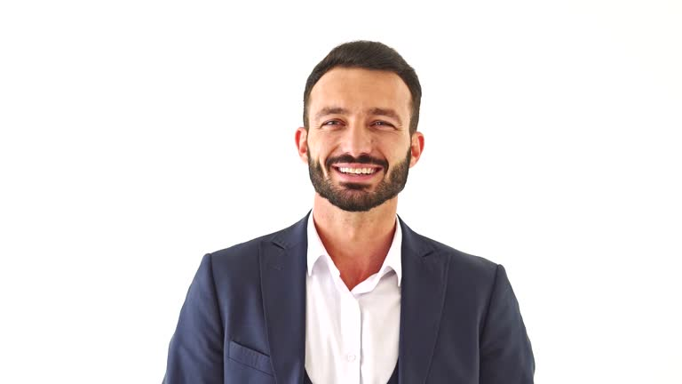

Existimos para conectar personas con la naturaleza en Honduras
Turismo responsable que protege la flora y fauna en peligro.
Inclusión
Impulsar oportunidades para comunidades locales, mujeres y jóvenes.
Resiliencia
Crear experiencias sostenibles frente al cambio ambiental.
Sostenibilidad
Equilibrar el turismo, el desarrollo humano y la conservación.
Nuestro Impacto
+150
Viajes responsables organizados desde 2020
+20,000L
Donados a proyectos de reforestación y protección de fauna
+50
Voluntarios movilizados para programas ambientales
Nuestro Equipo
María López
Fundadora y directora general.

Carlos Mejía
Guía local y educador ambiental.

Daniela Ramos
Comunicación y voluntariado.